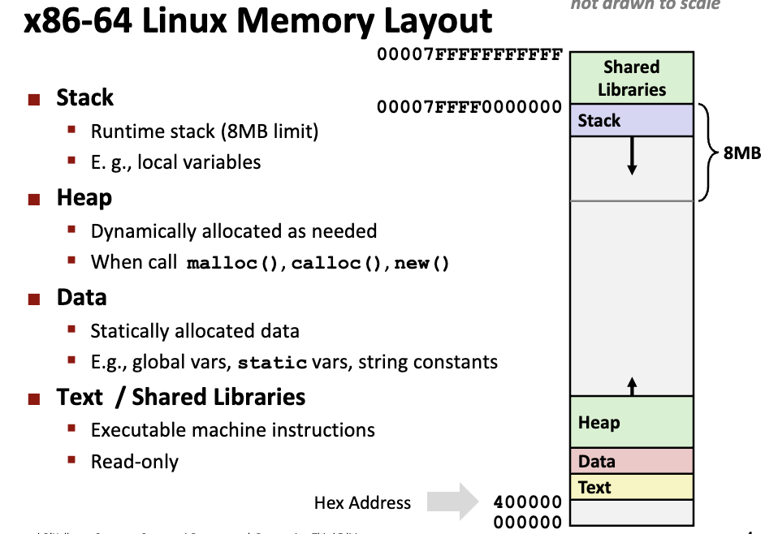
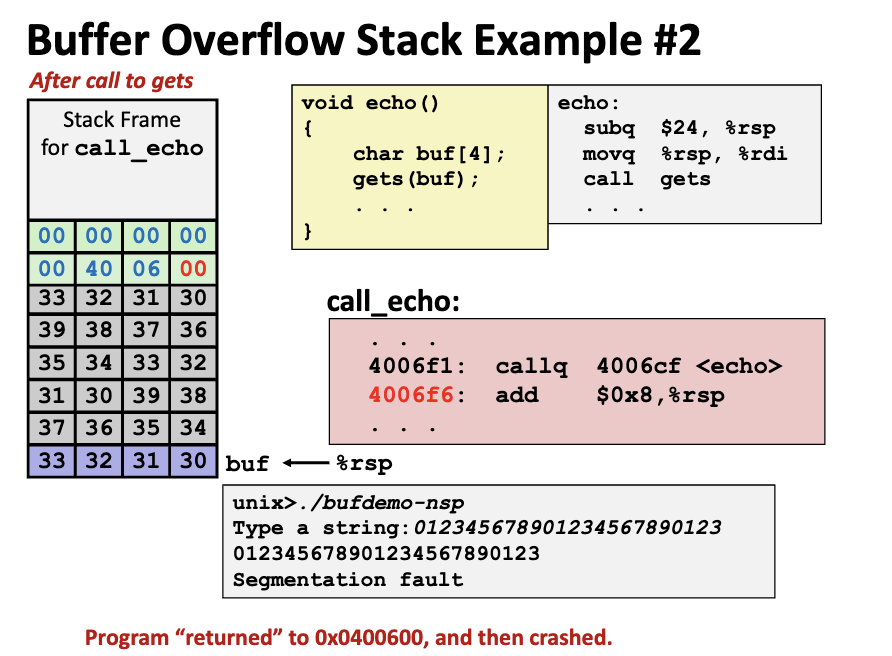
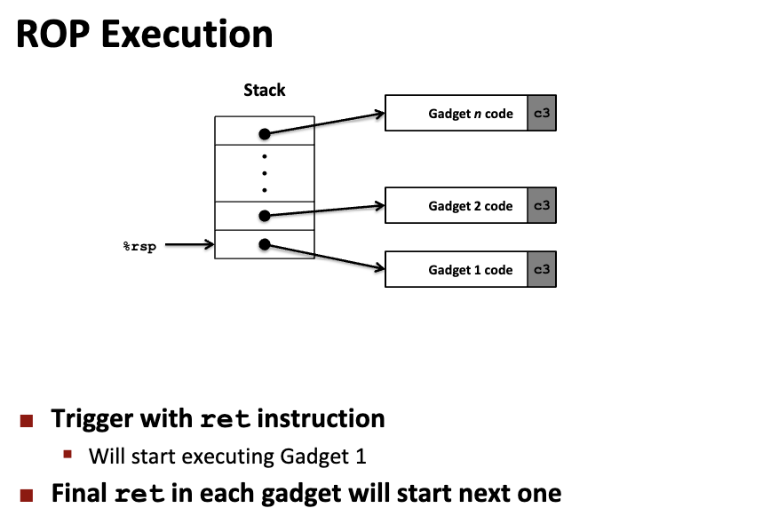

程序运行的内存分配策略
- 静态存储分配
- 编译时就能确定每个数据目标在运行时刻的存储空间需求,因而在编译时就可以给他们分配固定的内存空间；
- 程序代码中不允许有可变数据结构(比如可变数组)的存在,也不允许有嵌套或者递归的结构出现,因为会导致编译程序无法计算准确的存储空间需求
- 栈式存储分配
- 在编译期间，过程、函数以及嵌套程序块的活动记录大小（最大值）应该是可以确定的（以便进入的时候动态地分配活动记录的空间），这是进行栈式存储分配的必要条件，如果不满足则应该使用堆式存储管理
- 堆式存储分配
- 数据对象的生存期与创建它的过程/函数的执行期无关
- 在任意时刻以任意次序从数据段的堆区分配和释放数据对象的运行时存储空间，分配和释放数据对象的操作是应用程序通过向操作系统提出申请来实现

缓冲区溢出攻击
- 一个例子
- 应对之道：
- Stack Randomization，栈随机化，栈底指针浮动；
- 设置金丝雀Canary；
- 栈区域规定是不可执行的
金丝雀
40072f: sub $0x18,%rsp # 分配栈空间24bytes
400733: mov %fs:0x28,%rax # Get Canary %fs:0x28是一个只读的内存区域
40073c: mov %rax,0x8(%rsp) # Place it on stack(Canary 8byetes)
400741: xor %eax,%eax # 自己和自己做异或，即擦除Canary
400743: mov %rsp,%rdi
400746: callq 4006e0 <gets>
40074b: mov %rsp,%rdi
40074e: callq 400570 <puts@plt>
400753: mov 0x8(%rsp),%rax # Get it again from stack
400758: xor %fs:0x28,%rax # 重新和只读区域上的值做异或
400761: je 400768 <echo+0x39> # ZF = 0，即说明两者相等，没问题
400763: callq 400580 <__stack_chk_fail@plt> # 否则说明stack上的Canary被顶掉，Fail
400768: add $0x18,%rsp
40076c: retq
面向返回攻击Return-Oriented
Programming Attacks
- 利用已有的代码Gadget，跳转到Gadgets上逐步执行操作；
- 还是防不了金丝雀；
